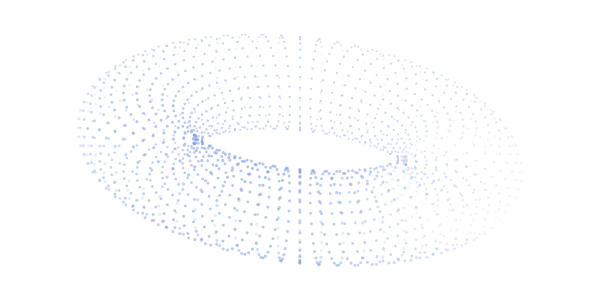
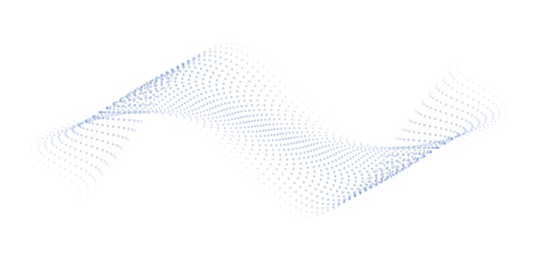

连接算力与服务
集成 DeepLink 跨域异构混训标准方案，树立与智算服务平台合作模式。
了解应用案例
集成 DeepLink 跨域异构混训标准方案，树立与智算服务平台合作模式。
了解应用案例产品能力
贯通训练、推理与产品集成。
支持多种国产卡、多种模型的跨域混训，等效算力超 95%。
应用多元算力混合推理技术，支持异构国产芯片混推、跨域混推。

可支持独立产品部署、产品融合、能力被集成，三种部署方案。
部署方式
按业务场景选择集成深度。
系统按照组件打包为镜像，可轻量化内嵌集成，业务工程直接引入组件继承使用，适配客户端轻量化场景。
应用案例
平台融合、跨域协同与标准方案实践。
智算云平台融合了DeepLink能力，支持多个集群间的混训混推任务；并依靠DeepLink跨集群异构能力，实现与其他集群异构混训能力。
查看完整案例